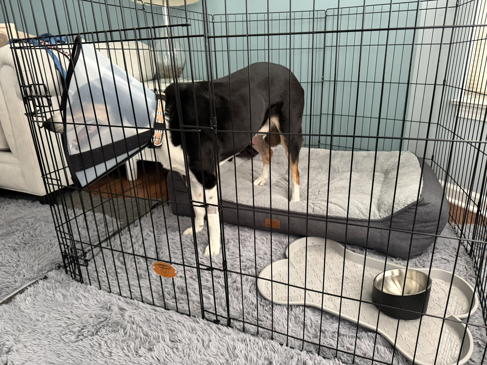

Medication timing
I needed to know which medications were due that evening, which began the next day, and which were only to be used as needed.
I followed the labels and discharge instructions written for Oliver rather than a generic TPLO schedule.
SURGERY DAY
Once Oliver was at the hospital, my job changed. I could not control the surgery. I could make sure the house was ready, understand the information I was given, bring him home safely, and carry out the first evening plan without relying on memory.
This page describes Oliver's June 5, 2026 surgery day. It is not a surgical protocol or medication guide. Follow the instructions provided for your own dog.
THE MOST USEFUL THING TO KNOW
I intentionally waited until Oliver was at the hospital before assembling the recovery area. I had already planned the layout and gathered what I thought we would need, but I did not want his last morning at home to be filled with furniture moving, pen panels, and visible changes he could not understand.
While he was in surgery, I set up the exercise pen, orthopedic bed, waterproof layer, water, airflow, and the path I would use to get him outside.
That meant I was not building a recovery space while also trying to care for a dog who had just undergone major orthopedic surgery.
BEFORE DROP-OFF
By surgery day, Oliver's pain-control plan had already been adjusted because panting made me concerned that he was not comfortable enough. I had also been working through confinement, medication timing, stairs, beds, cooling, and how I would physically manage a dog weighing about 55.8 pounds.
I knew from his earlier TPLO that surgery day was not the time to begin deciding where he would sleep, how he would get outside, or which room would become the recovery space.
The exact fasting instructions, drop-off time, preoperative testing, and transportation details are not preserved in the current verified record, so I am not recreating them.
JUNE 5, 2026
Oliver underwent TPLO surgery on his left rear leg.
The surgeon reported that there was no meniscus damage. That was one favorable finding in a day still centered on a major orthopedic procedure.
Two shoulder lumps were also removed, and biopsy was requested. That meant I was not thinking only about the knee. There was also uncertainty about the shoulder masses.
The current TPLO source record does not include the operative report, radiographs, exact surgeon wording, exact pickup time, or pathology result. Those details remain unverified and should not be filled in from memory.
WHAT I NEEDED FROM DISCHARGE
I needed to know which medications were due that evening, which began the next day, and which were only to be used as needed.
I followed the labels and discharge instructions written for Oliver rather than a generic TPLO schedule.
I needed clear expectations for getting him from the vehicle to the recovery area, taking him outside, and assisting him without creating unnecessary movement.
I needed to understand how the surgical areas should be protected and what changes would require a call.
Because shoulder masses were removed too, more than one site required attention.
I needed to know what was expected after anesthesia and how food intake affected the medication plan.
I needed a safe plan for bathroom trips from the first evening, not only once he began walking more normally.
I needed to know which changes could be watched, which required a call, and where to turn if something happened after the regular clinic had closed.
BRINGING OLIVER HOME
Oliver came home and began the first-night recovery period in the exercise-pen area I had prepared.
The original setup included a large orthopedic bed, water nearby, and a defined space intended to prevent wandering, furniture access, and sudden movement.
It was not the final version of the recovery area. Later, I adjusted the cover, water setup, available space, and cooling based on what Oliver actually needed.
On surgery day, the important thing was that there was already a safe starting point.
WHAT THE FIRST SETUP LOOKED LIKE WITH OLIVER IN IT
Before Oliver came home, the bed, water, and pen appeared to fit together well.
Once he was standing inside the pen wearing the cone, I could see how much more room he needed to turn without hitting the walls.
That did not mean the original setup was careless. It meant the empty pen could not show me exactly how the dog, cone, bed, and bowl would work together.

THE FIRST MEDICATIONS AT HOME
The verified record supports that I gave gabapentin, acepromazine, and cephalexin on the evening of surgery.
The discharge record also references carprofen beginning the next day and contains more than one cephalexin entry, along with gabapentin schedules that changed across different stages of care.
Because the internal record contains unresolved strengths, combinations, and timing details, this page does not reproduce a medication schedule.
The lesson is not which pills Oliver received. The lesson is to build one current chart directly from the discharge sheet and prescription labels before the first dose is due.
THE FIRST EVENING
After coming home, Oliver had a large initial urination.
Later, at approximately 12:48 a.m., he whined. I took him outside, and he urinated and defecated. The immediate distress resolved after the bathroom trip.
That moment became one of the clearest lessons from the first night. A sound I could have interpreted as pain, medication reaction, or inability to settle turned out, in that instance, to be useful communication about a basic need.
It did not teach me to dismiss whining after surgery. It taught me to check the whole situation before deciding what one behavior meant.
WHAT SURPRISED ME
Hearing that there was no meniscus damage was reassuring. It did not make the evening feel simple.
Once Oliver came home, the questions became very small and immediate: Is he settled? Does he need to go out? Can he reach the water? Is the medication due? Is this normal for him tonight?
Surgery day was not one dramatic moment. It was a handoff from the veterinary team to the home routine, where every ordinary need had to be handled more carefully.
WHAT I WOULD DO AGAIN
WHAT I WOULD DOCUMENT BETTER
Better records would not change Oliver's surgery day. They would make it easier to separate verified fact, direct observation, and later memory.
WHAT REMAINS UNCERTAIN
The current record does not verify the exact drop-off or pickup time, fasting instructions, preoperative testing, full discharge conversation, loading method, operative report, radiographs, or pathology result.
The medication record also contains unresolved strengths and overlapping entries that should be reconciled against the original labels and discharge paperwork.
Those gaps are why this page focuses on the verified sequence and the practical lesson rather than pretending to be a complete surgical record.
THE NEXT QUESTION
The first 72 hours were less about reaching milestones and more about medication, bathroom needs, food, water, comfort, rest, and learning what Oliver looked like after surgery.